projects
actively seeking full time + freelance opportunities.
nolaskinsentials, 2024
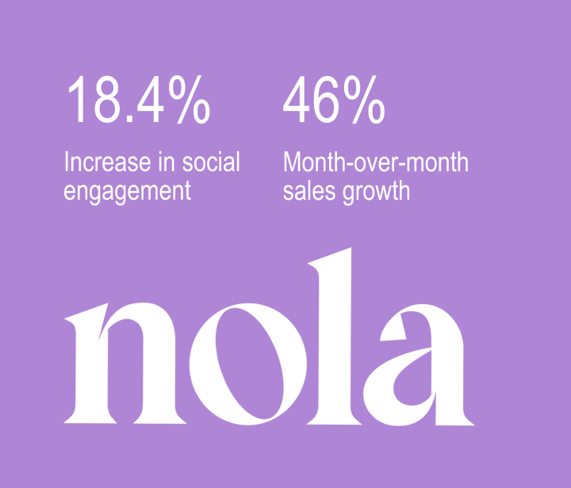
nolaskinsentials is an atlanta-based skincare brand naturally formulated to target a range of skin types and concerns.
website redesign (project management, brand)
to reflect changes in the social realm, nola was due for a website lift. i reimagined and worked with our web designer, Victoria, to conceptualize nola's website navigation, and various pages along the site to help promote new and cult-favorite products.
the process
there were a few variables that needed to be included in this website redesign: push customers towards new and cult-favorite products, highlight our skin quizzes, and most importantly, showcase how nola's products can help give you the glowiest skin of your dreams.
previously, the navigation bar showcased every single one of nola's products, which created a lack of hierarchy.
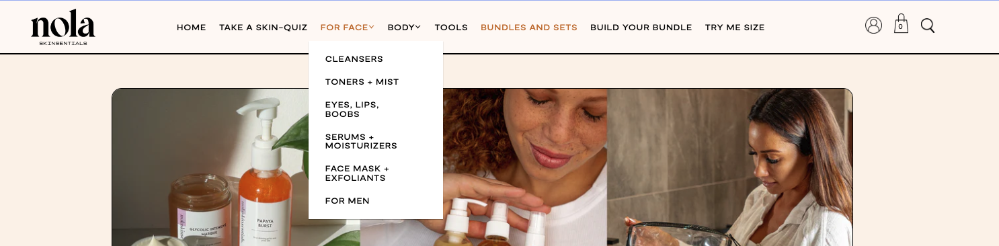
with new customers and our variables in mind, customers can now browse through nola's site while being reminded of the latest product lines, and have a concrete understanding of what nola is known for. i revamped our information architecture and distilled nola's products into different categories to create a more seamless user experience, while keeping the ~clean girl aesthetic~ alive with clean lines and organic shapes.
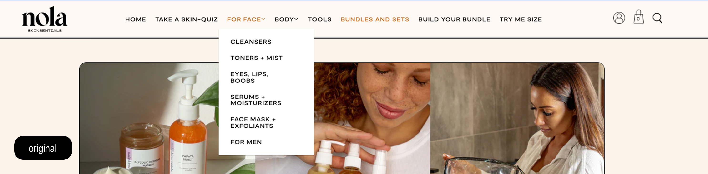
valentine's day campaign (ecomm, social)
working together with our brand and social coordinator and email marketing team, i devised a valentine's day campaign in less than a week that boosted nola's in-app sales by 46%.
the process
the goal for this campaign was simple: push our customers to shop in-app. the sale offered two things: free shipping on intimate products over $40, with a mystery freebie.
on the email side, we sent emails to preexisting customers to let them know that if they shopped in-app, there would be a mystery gift waiting for them in their cart. on the social side, we created social media posts that alluded to our exciting sale.
the proof
instagram_01 instagram_02 instagram_03
murmur, 2022
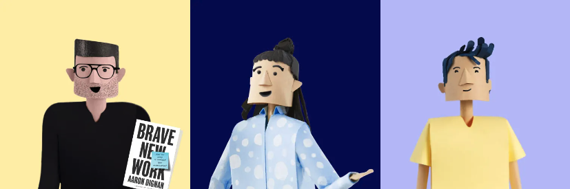
murmur is a collaborative decision-making tool that ditches traditional documentation methods and enables teams to propose better agreements.
marginalia framework (content design, strategy)
murmur was at the crossroads between the traditional way of working and the future of work. i was tasked to create a content framework for murmur's blog, marginalia, that reflected murmur’s ideology: the future of work is collaborative work.
in their previous framework, unnecessary and repetitive categories made their content inaccessible.
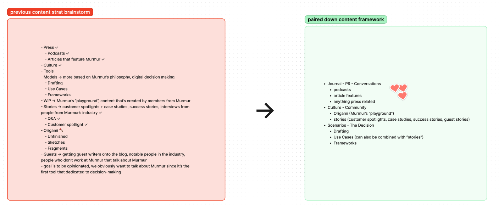
the process
murmur had a handful of content created based on Aaron Dignan’s version of the OS canvas- a tool for organizational sense-making and reinvention. before i could create their content framework, i had to first read and categorize all of their preexisting content.
collaborated with murmur’s CEO, Brand Designer, and Customer Success Representative to finalize murmur’s content framework. with four different buckets of content, i wanted to create to adhere to a healthy mix of product education, team interests, and future of work topics. i included a bucket called “conversations” to cross-post any interviews or articles related to the murmur-sphere.
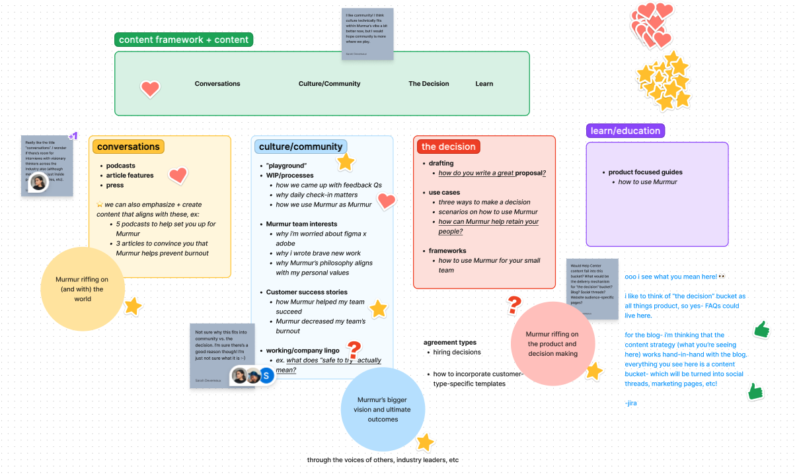
the proof
marginalia blog
contra, 2021
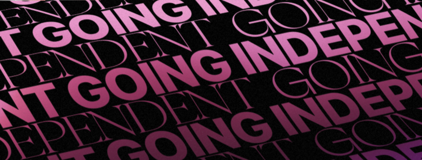
contra is an all-in-one, commission-free freelance marketplace tool.
the contrarian (content design, strategy)
there was an excess of inaccessible content on the Contra site, and we needed to create a one-stop shop to house all of its content. with the contrarian, we were able to link and categorize all of our content, create product-focused guides, and share the latest freelancing trends.
i wanted to foster an environment where freelancers could come to the contrarian, and find everything they needed to know about freelancing.
the process
i researched and wrote SEO-based long-form content based on contra's most popular and active user base at the time. i worked with the head of creative, the content lead, and various engineers to integrate critical features of a blog such as tagging, a comprehensive text editor, and embedded videos within each post. i also created the blog's content framework and information architecture.
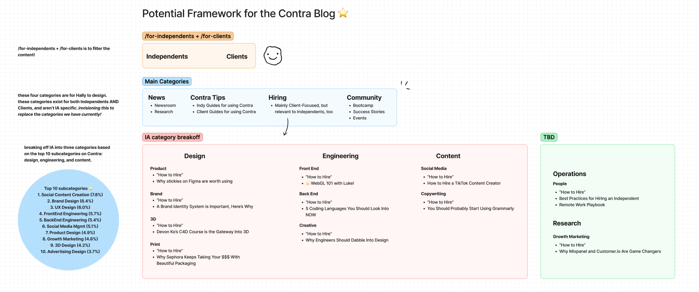
i also collaborated with contra's brand designer, Hally, to create a visual library full of assets that would be used in each post, reflective of the brand at every moment.
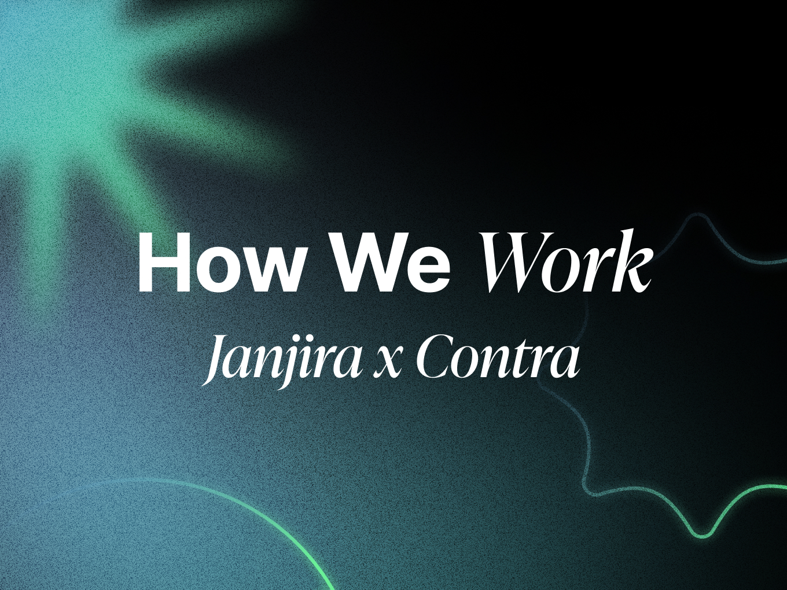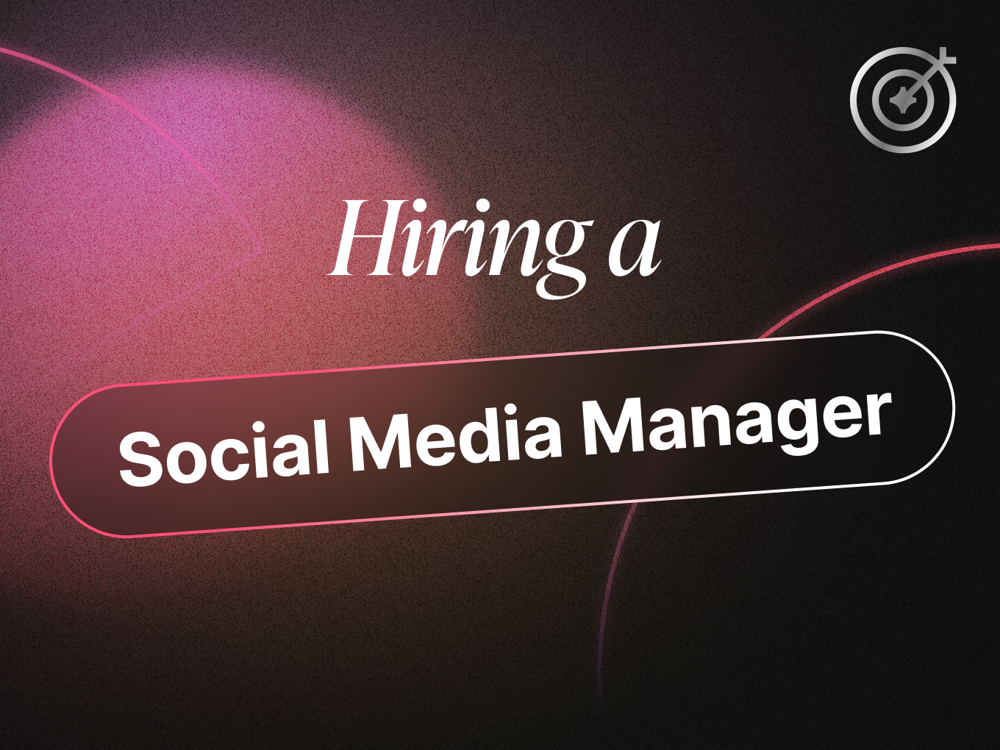
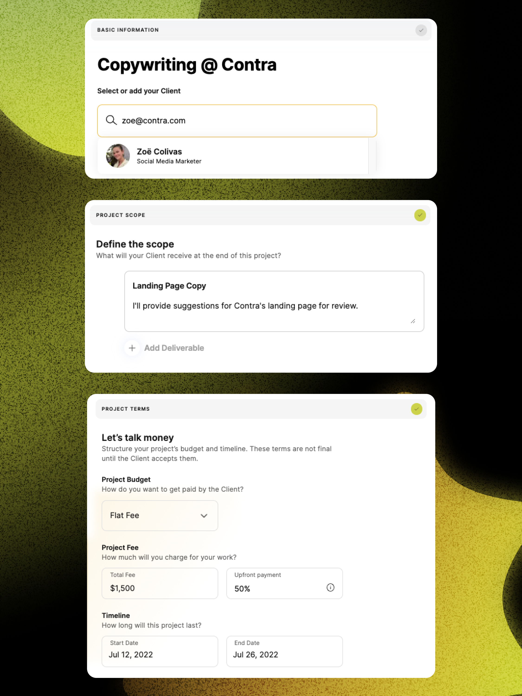
the proof
note: while there are some pieces that i've ghost written for other members of the contra team, they've changed the authors for some of the work that i've spearheaded and published.
hire your next tiktok content creator
guide to projects
what's a product designer?
musings + creative space
finding love in creating again
for a long time, it's been really easy for me to create content behind a brand. rarely do i ever get to take credit for the concepts or content i create.
lately though, something in me shifted. i had this sudden (almost violent) urge to create something of my own. i wanted to create something that i could look back to, and not have to worry about the numbers or how my content would show up in a google search.
and while it might sound silly that i haven't created content for myself in a long time, i honestly agree!!
it's so easy to create content for other people, and i've fallen down a path where i can be so critical of my own work. i want to do better, and this is just the start of it.
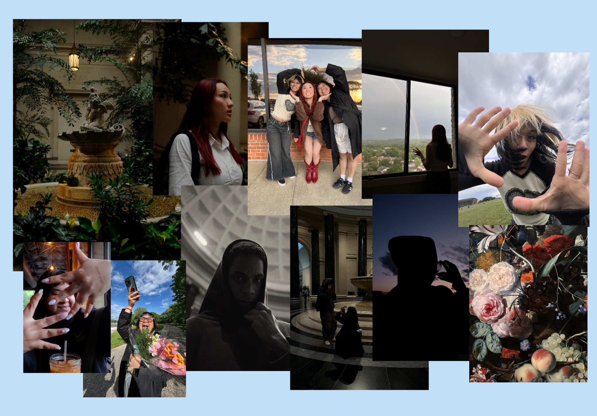
building in public
i don’t know about you, but i’m always finding myself siloing while working on projects, and i almost pride myself on delivering the final draft without any updates in between— and it’s not giving girlboss like i thought it would.
in my work, there’s miscommunication, and sometimes, multiple revisions. to find work, i’m not active on social media enough to get the traction or eyes i need. when i’m working on personal hobbies, i’m restraining myself from sharing my progress, which leads to a ton of pressure that appears out of thin air for no reason.
the solution might seem obvious — share my work more often! but how do you share your work without feeling the pressure of society? i guess we’ll find out later ¯\_(ツ)_/¯

saying “no” is the hardest thing for me
if you know me, you know that i’m practically down for anything. need a place to cry? sure. need someone to listen to your deepest darkest secrets? i’m on it. want to come over practically unannounced? absolutely.
a lot of the time, i’m sticking my leg out for those that i care about, regardless of how long we’ve known each other. in my head, it’s so much easier to help a friend out even if my heart, mind, and body say no, instead of feeling guilty for not taking the time to help, fearing that they’d think of me as a bad person.
everyone wants to be known as a good friend, person, or partner, and when the person you want to have a relationship with starts to grow cold and distant, you begin to wonder what you did that was so wrong.
in my most recent case, i was the one who was distant and cold, but not for the reasons one might expect. i often, more than not, put my own feelings aside and prioritize everyone else’s feelings instead, which answered the “am i a good person?” question (yes), but at what cost? (my mental health)
when i’m not my usual bubbly self, i’m cold and distant. but when i’m cold and distant, i’m made to be the bad guy. which begs the question, who even am i?
while i’m working my way up to getting comfortable with saying no, i’m reevaluating who i am outside of the support character that i’m more commonly known for at the same time.
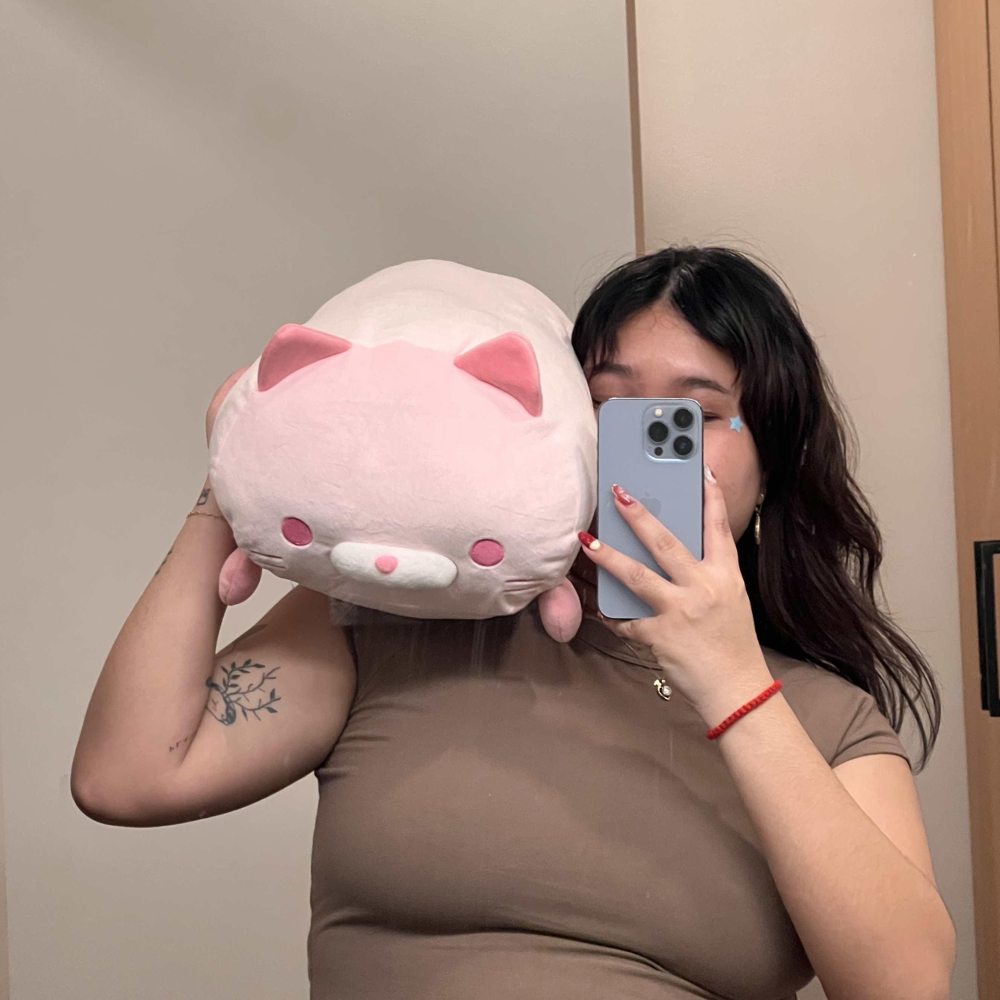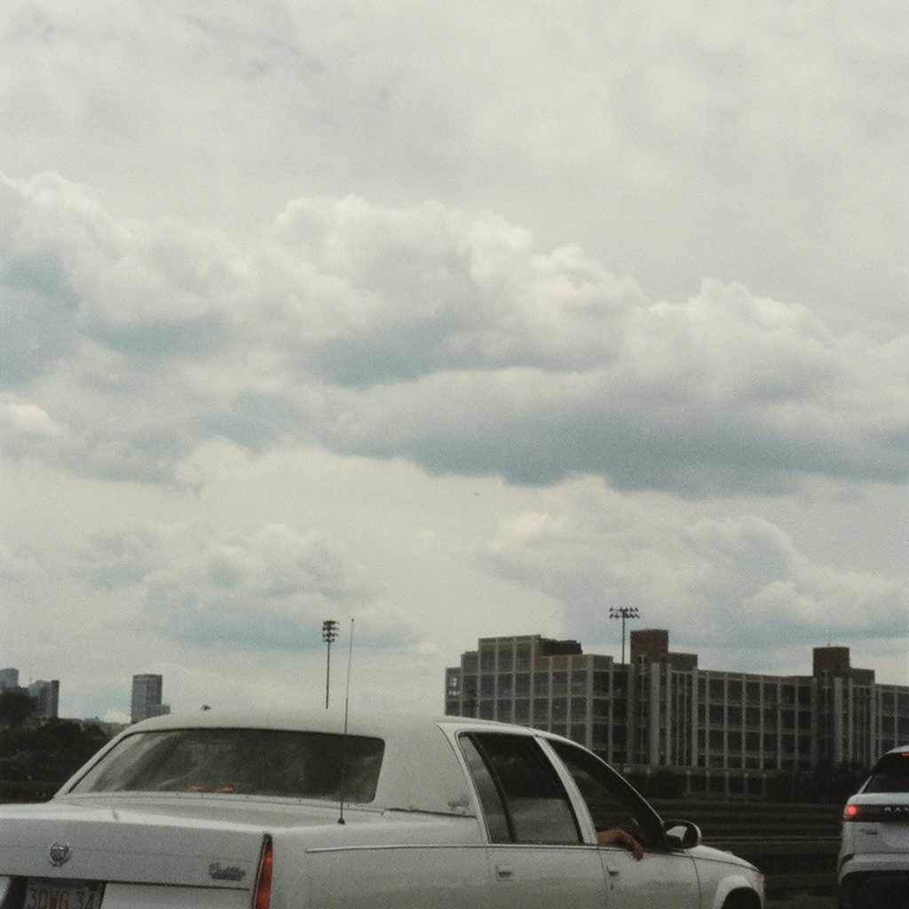
tech is ugly 🫢
during my ~interim~ period, i’ve thought long and hard about my job situation, and how to maintain financial security. in short, it’s just been exhausting. i know a lot of my friends who are either employed or not feel the same way.
i’ve lost people that i’ve considered to be friends because of the tech bubble. the attention on twitter, endless line of clients, and the finances to fund an entire year made in a singular month really just fucked with some people’s heads and their sense of human intimacy.
the way i got into tech was by accident, and like many others, when i got into it, i was hooked. hollering to the moon to my friends about how easy it all is. between 2020 and now, tech had a crazy boom. all of my friends were getting employed, VCs were pouring money into every startup that needed it, and we were prospering. now, that just feels like lightyears away.
i want to sincerely apologize to those that ever felt pressured by me to work in tech. this shit’s garbage a lot of the time.
now that i can see the greed, the politics, and everything in between, i’ve been so turned off by the tech bubble. despite this, tech truly changed my life. solving made up problems helped me pay my bills and provided financial security.
i can’t bear the thought of working a 9 to 5 after being let down time and time again, but i’m really, truly, taking my sweet time to try and find the right company, even if it’s hard for me to be picky.
we all deserve to work in spaces that we care about.
about janjira 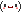
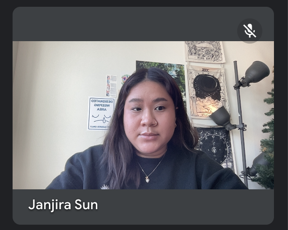
hey, i'm janjira- a content strategist and copywriter hybrid based in Seattle, WA. i have a background in journalism, professional writing, and digital media.
over the course of my career, i've had the pleasure of working with influential figures in the design sphere like Lovers Magazine (now: Spaces), and tech startups like Murmur (now: Plumb) and Contra: leading a series of content and brand initiatives, design projects, and UX experiences.
leading with my love for community as a first generation cambodian-american, one of my goals in the workplace is to break the societal stigmas that were subconsciously placed upon women and BIPOC.
in my free time, i love to take photos (ask me about my photography stack lol), experiment with my fashion, drink matcha lattes, and swoon over my current kpop biases.
experiences
2024
nolaskinsentials (content strategy, project management)
cardless (copywriting)
quiet tuesday (brand, content)
2022
murmur [now: plumb] (content marketing)
2021
contra (copywriting)
damnventures (copywriting)
pico (copywriting)
figma (content writing)
2020
lovers magazine [now: Spaces] (social management, brand, editor)
in my universe (brand, social management)
godling studio (pitch deck writing)
superhi (copyediting)
contact
instagram twitter tiktok newsletter email